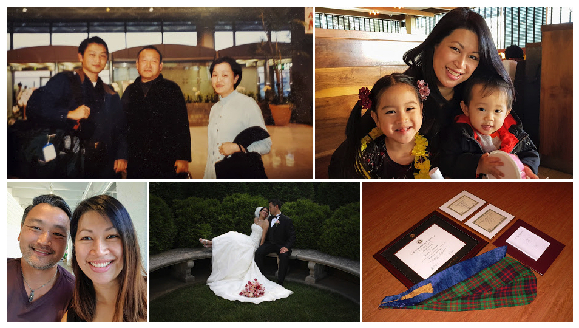
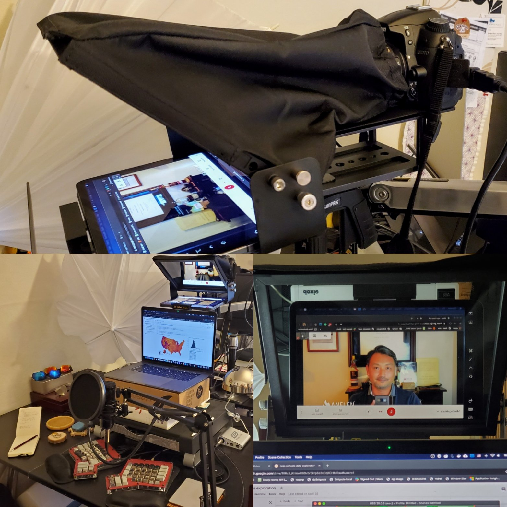

45 years old
In the last 12 years, I have been keeping my journal at the end of each year since my birthday is in December. I do so in Japanese, my mother language, so I can fully express my thoughts. Below is a machine translation by DeepL Translator, and I did edit a little edit where it sounded very awkward. This year has been a great learning, and I hope you read my journal and share your thoughts with me.
If you understand Japanese, please read the original.
I’ve been so immersed in programming that I didn’t finish writing my birthday diary until almost the beginning of the year. I’ve been working hard on the latest version of handoff, a collection of tools I created to efficiently run the data pipeline service of my company, ANELEN. Fortunately, version 0.3 has been released before the end of this year, and I am now able to breathe a sigh of relief. As various companies provide various online services, the data pipeline work, which is to efficiently extract and format the data automatically generated by users’ activities and store it in a large database, is becoming more and more important and complex. handoff is a software tool that makes this possible at low cost and high performance. handoff has grown into an important tool that supports ANELEN’s business. We have made it available as open source software free of charge. The model is not to sell or license the software, but to create a data pipeline service using the software, and to earn continuous revenue from the usage fees. Unlike selling out, this form of services would be an essential business model to continuously improve and response to rapidly changing technologies.

Fruit of 20 year journey
2020 has been a meaningful year; I became 45 years old, which in a sense is more significant than 40 years old, and at the same time I celebrated my 20th anniversary in the United States. After arriving in the suburbs of Washington DC as a visiting scholar at Georgetown University, I went on to earn my Ph.D. at Carnegie Mellon University, married my wife, Yvonne, whom I met in the grad school, had two children, and started my own business three and a half years ago. 20 years after I came to the U.S. alone and empty-handed, and I think I’ve completed a form of my own. It is the end of the year when the word “completion” repeatedly comes to my mind with gratitude. I am grateful.
This year, I was able to reach a major milestone in terms of family finances. My wife and I worked together diligently in our respective fields of expertise, used the income we earned wisely, invested it, and made it this far on our own. I felt the accomplishment profoundly. At the same time, I have one thought about our children growing up in a slightly different environment economically than we did. They are only five and a half and two and a half years old, so you might say it’s too early to start worrying about these things now. But when they grow up, I wonder what will happen if they receive more money than they need to live as common people. After excluding the money needed for their own lives, the money would be invested in some way to contribute to some project in society. Depending on the mind of the person who decides where it goes, the wealth of oneself, one’s surroundings, and society can grow, or it can go to waste. I want my children to be free to follow their own path, but I want them to grow up economically wise.
People, Money, Machines
We all have our own ideas of what the word success means and how successful we expect to be in life. But until now, people who were considered successful in the world had the ability to move people or money. In addition to those two things, I think the time has come for people to have the power to move machines. The reason I used the transliteration “machine” (マシン) instead of Chinese letter “machine” (機械) is because it has a strong connotation of software, not physical machines. This software includes applications that use so-called artificial intelligence. People, money, and machines carry out the intent of decision makers on a large scale, and have such a large impact on society. In contrast to a worker’s income, which is determined by the wage rate and hours worked, compensation is determined by the impact made. The time spent is irrelevant, and the impact is infinitely scalable.
The reason why these ideas appeared in the form of words in this journal may have been influenced by the words of Naval Ravikant, a famous entrepreneur and investor. After I wrote this, I searched again and found this tweet.
Earn with your mind, not your time. https://t.co/pmkQ4Fiigd
— Naval (@naval) December 22, 2017
If you’re leveraged with capital, code, or people, and own equity, then good decisions have a much larger earning impact than hard work.
— Naval (@naval) December 20, 2017
My tweets about the price programmers have to pay for the same perspective:
Speed should be a premium feature. Those who code faster should be rewarded, not discounted or penalized by more shitty work.
— Daigo (@DaigoTanaka) December 11, 2020
It may be a trap that you can’t get out of while you are a salaried programmer because you work too fast. If you are a capable person, you should seriously think about how to become independent or move to a company that will treat you as a partner.
Let me quote Ravikant again.
Forty hour workweeks are a relic of the Industrial Age. Knowledge workers function like athletes - train and sprint, then rest and reassess.
— Naval (@naval) June 10, 2017
To this day, this lever may have been the dividing line between the rich” and the rest. However, as the leverage of technology becomes more powerful, I think the line has been coming down to “those who can live comfortably and those who are poor”…at least as long as the current form of capitalism continues. This is both a threat and an opportunity for workers.
Everyone is good at something.
Mr. Ravikant is also famous for releasing a podcast called How to Get Rich (Without Relying on Luck).
I wrote about my thoughts after listening to it in the fall:
先日聴いていた長時間ポッドキャスト（下の自己リツィート参照）の中でナヴァルが繰り返していたのは、「誰しも何かに長けている」。このメッセージをふと思い出して考えた。自分が何かに長けているというのは、その何かにどれだけ没頭できるかと深い関係がある。そういう意味で、（続 https://t.co/H8iskrZKDJ
— 田中乃悟 (@daigowho) September 10, 2020
In a long podcast I was listening to the other day, Naval kept repeating that everyone is good at something. I suddenly remembered this message and thought about it. Being good at something has a lot to do with how much you can immerse yourself in that something. In that sense, there are many hints of what you are good at hidden in the things you immersed yourself in during your teenage years without thinking about profit and loss or career. In my case, I was introduced to programming when I was in the eighth grade, and even now, I sometimes literally forget to eat and sleep and devote myself completely to coding. There are many kinds of coding, and I am not a genius who can invent elegant algorithms. Rather, I immerse myself in coding applications that solve familiar problems. When I came to make my profession in data analysis, I developed my own tools to handle large amounts of data efficiently and stably, just like making one’s own fishing tackle and traps as a fisherman. It’s tiring to work on it all the time, but I think the natural immersion has to happen once in a while to make it last. Everyone can immerse themselves in something. So before deciding what to do with your life based on your career or salary, you should be honest about what you can immerse yourself in. Even if you have the same job on the surface with others, being aware of what you can immerse yourself in will create an intrinsic sustainability. You may be doing the same job as someone else, but it creates a unique approach and increases the likelihood of finding your own niche. If that ability is useful to someone else, you can make your living. Be honest about what you can immerse yourself in.
One more thing that I was immersed in
This brings me back to the subject of immersion at the beginning of this journal.
After a few months of being cooped up at home due to COVID 19 pandemic, I have another personal project that I have been immersed in. One of the things that bothered me about online meetings was that the more I looked into the person on the screen, the more my gaze drifted away from the camera and the less eye contact I had. I saw a demonstration by Yuushi Kawashima of Niantic on how to solve this problem by placing a webcam behind a half-mirrored display.
I was inspired by this but didn't want cardboard... https://t.co/xb4rpA9ryj
— Daigo (@DaigoTanaka) June 13, 2020
The same idea, for a little more money, was beautifully realized by Ivan Kirigin, an entrepreneur and investor who also advised to Fivestars in its early days:
Oh my god, your tweet just made me order Glide Gear. I'm all for experimenting with a remote presence :)
— Daigo (@DaigoTanaka) June 9, 2020
He was using a Glide Gear teleprompter with an iPad in external display mode, and a digital mirrorless camera to improve the image quality. The teleprompter is a half-mirrored device that is often used by important people to read their speeches without looking away from the audience. Inspired by their idea, I wanted to try it myself and ended up with the setup shown in the photo below.

This photo is still in the prototype stage, using an iPad as a face-to-face monitor like Kirigin’s, and we’re still working out the placement of the laptop and everything else, but I ended up with an easy-to-use remote presence system with high quality video and sound with:
…with business expense at ANELEN :)

Virtual backgrounds for zooming, etc. are useful, but they feel cheap. So I bought a Sony A6100 mirrorless camera to use as a webcam so that the office background would have a professional look. This is how I greet people in my daily meetings, making eye contact with them.

To others, it may just end up as “spending time and money on silly things again” or “Wow, that’s interesting”. But there’s a much deeper reason behind my immersion in these things.
The new normal. Innovation in the meaning of the word “meeting”.
My remote presence project above started when I couldn’t meet people in person due to the shelter-in-place, but the question of how to improve the quality of remote communication has been a theme I’ve thought about a lot over the years, ever since my close friends scattered to remote areas. I’m very interested in how close we can get to the experience of meeting up at a café and enjoying a chat around a small table, from the exchange before the meeting to the reality of the conversation during. The desire to have a casual and real conversation with my friends who used to breathe the same air in town; I’m sure many of us have that wish.
This year, my eldest daughter went up to Kindergarten. This is her first year of compulsory education and all her classes are online. Fortunately, my daughter was online for the last few months of preschool, and her new homeroom teacher is good at computer, so I’m relieved to see that the online classes flowed smoothly for the most part. My daughter has learned the names of her new classmates and is enjoying chatting with them over the screen during breaks. Seeing her having a completely different schooling experience than I did as a child, I wondered if the meaning of meeting people would be different for them than it was for me. Although the current shelter-in-place may be exergerating the effect, I have a feeling that in the long run, too, the number of people we encounter digitally will be greater than the number we encounter in person. Maybe not only in number, but also in the depth of meaning of the encounters.
This year, I’ve been enjoying staying home to watch old science fiction series Star Trek and more modern Expanse. Asynchronous communication will have a large share of the extravehicular communication in those world. What will the word “meeting” mean in the age of space exploration?
New forms of meeting. New opportunities.
My business, once it starts, is all remote, but I’ve always done my sales face-to-face, focusing on building relationships. This spring, with several clients leaving due to the COVID-19 situation, I couldn’t do any sales at all, which made me a little nervous. I wondered how I could meet new people and deepen relationships that would lead to future business. Completely online. After much thought, I put two things into practice. The first is to reorganize the code that has been useful for my business so that others can use it, and release it as open source projects for free. The second is to join a community on platforms like Slack, in the same topic of my interest, and help those in need.
Putting profits aside, doing something useful for others will create trust and reputation. These two things are important cornerstones for getting new work wherever it may come from. In fact, in the past six months, I have released three to five pieces of open source software projects, large and small, and each of them has attracted initial users. The online conversations that emerged were deep, between people who were interested in the same issues. It helped me build relationships more quickly and more reliably than the superficial conversations one can have at any paid business conference. In addition to the U.S. and Japan, I was approached by people from all over the world, including Nepal and Brazil.
In October, I got a new long-term project and won a contract renewal and sales increase for 2021 from ANELEN’s first customer for data pipeline services. Unsurprisingly, to me, the 2020 was the year with biggest financial growth.
An era in which the individual shines more and more, an era in which the individual can take on the entire world; in a way, this is the essence of a networked society. What I want to think about is that you don’t have to be a superstar with millions of followers to make it. It just depends on whether you have what Ravikant calls the belief that everyone is good at something. And being good at something has a lot to do with how much you can immerse yourself in that something. Being able to immerse yourself in something is the first step to being able to make it interesting to others. If what you are immersed in can help someone else in the world, you can make a living.
After a while of immersing myself and being exhausted, I often feel frustrated and wonder if I should be spending my time on this, or if there are more important things I should be doing.
But this is okay, let’s be honest about what we immerse ourselves in, that’s my message to my 45-year-old self.